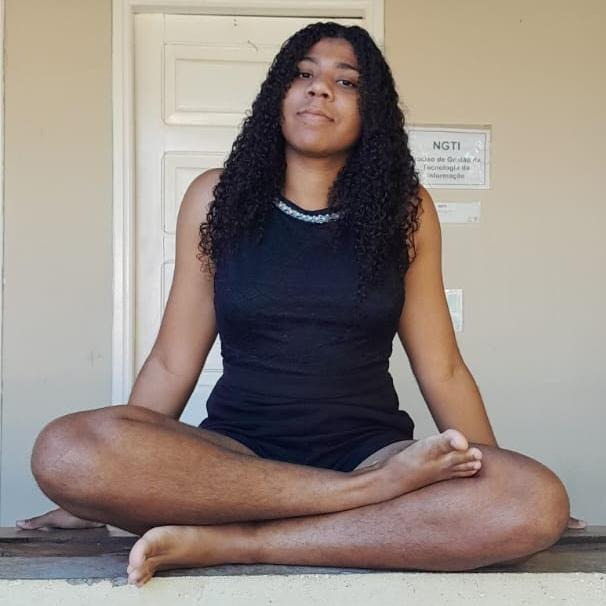

DESENVOLVEDORA
Olá! Tudo bem? Meu nome é Anica Gabrielli, sou desenvolvedora formada em Informática para Internet pelo IFbaiano - Campus Guanambi. Desde minha formação, no final de 2024, venho criando sites e sistemas com o objetivo de proporcionar soluções que realmente façam a diferença na vida dos meus clientes. Meu foco está sempre em oferecer a melhor experiência para os usuários, aliando tecnologia de ponta a um diálogo aberto e transparente com todos os envolvidos no projeto. Sou apaixonada por tecnologia e adoro transformar ideias em realidade através do código. Se você está em busca de um site ou sistema que atenda perfeitamente às suas necessidades e eleve seus projetos a outro nível, estou à disposição! Não hesite em entrar em contato comigo. Confira minhas redes sociais abaixo. 😊